Laporan Praktikum 9
Pemrograman Web
Pendahuluan
Pada praktikum ini dilakukan pembuatan aplikasi Sistem Informasi sederhana menggunakan framework Laravel 12. Praktikum dimulai dari pembuatan project Laravel, konfigurasi database, pembuatan sistem autentikasi, penggunaan template SB Admin 2, hingga implementasi fitur CRUD User.
Laravel 12 menyediakan berbagai fitur yang memudahkan proses pengembangan aplikasi web seperti routing, migration, seeder, blade template, middleware, dan ORM Eloquent. Dengan memanfaatkan fitur-fitur tersebut, aplikasi dapat dibangun dengan struktur yang lebih rapi dan mudah dikembangkan.
Tujuan Praktikum
- Memahami proses instalasi dan konfigurasi Laravel 12.
- Memahami koneksi Laravel dengan database MySQL.
- Mengimplementasikan sistem login dan autentikasi.
- Menggunakan template SB Admin 2 pada Laravel.
- Membuat fitur CRUD User.
- Memahami penggunaan Route, Controller, Model, dan View.
Alat dan Bahan
- Windows 10/11
- XAMPP
- Visual Studio Code
- Composer
- Laravel 12
- MySQL
- Browser
- Template SB Admin 2
Langkah-Langkah Praktikum
1. Membuat Project Laravel 12
Langkah pertama adalah membuat project Laravel baru menggunakan Composer. Setelah proses instalasi selesai, aplikasi dijalankan untuk memastikan project berhasil dibuat dengan baik.
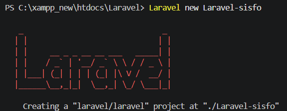
Tampilan di atas menunjukkan halaman awal Laravel yang menandakan project berhasil dibuat dan dijalankan.
2. Membuat Database
Database dengan nama laravel_sisfo dibuat melalui phpMyAdmin. Database ini nantinya digunakan untuk menyimpan seluruh data aplikasi.
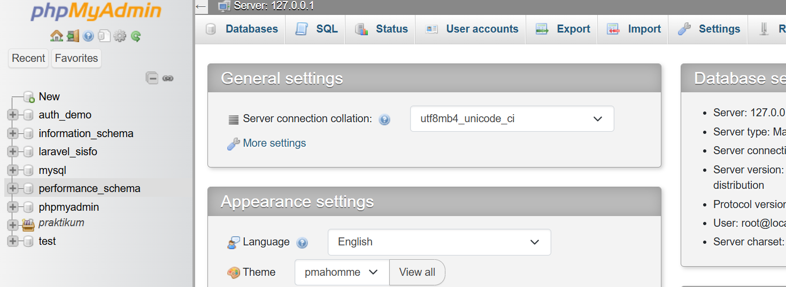
Setelah database dibuat, konfigurasi koneksi database dilakukan pada file .env.
3. Konfigurasi Koneksi Database
Laravel dikonfigurasi agar dapat terhubung dengan database MySQL yang telah dibuat sebelumnya. Konfigurasi dilakukan melalui file .env dengan menyesuaikan nama database, username, dan password.
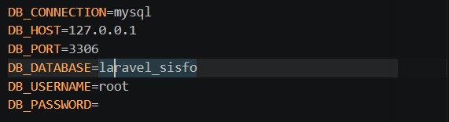
4. Membuat Authentication
Authentication digunakan agar pengguna harus login terlebih dahulu sebelum mengakses halaman dashboard. Setelah authentication berhasil dibuat, Laravel menyediakan halaman Login dan Register secara otomatis.
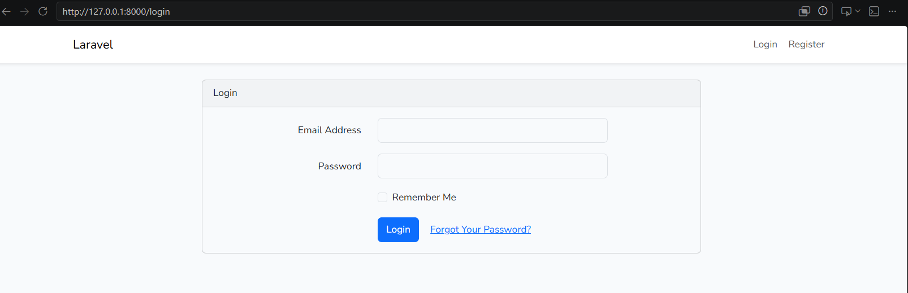
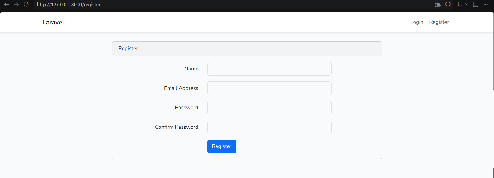
5. Menjalankan Migration
Migration dijalankan untuk membuat tabel-tabel yang dibutuhkan pada database, termasuk tabel users yang digunakan dalam proses autentikasi.
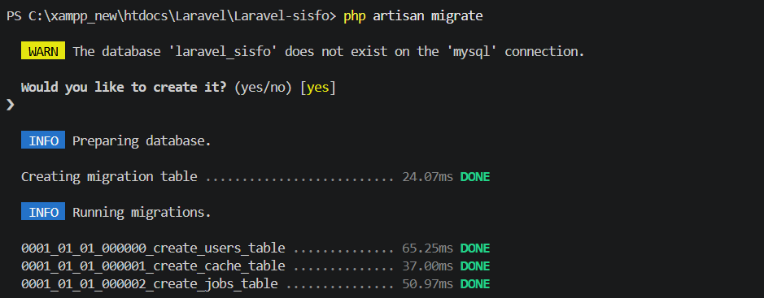
6. Modifikasi Tabel Users
Struktur tabel users disesuaikan dengan kebutuhan aplikasi dengan menambahkan beberapa field seperti username, level, dan status.
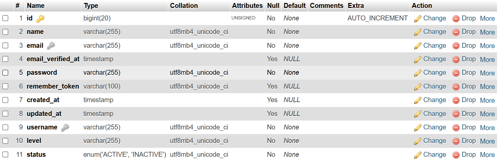
Field tambahan ini digunakan untuk menyimpan informasi akun dan hak akses pengguna.
7. Membuat Seeder Admin
Seeder dibuat untuk menambahkan akun administrator secara otomatis ke dalam database sehingga pengguna dapat langsung melakukan login tanpa registrasi terlebih dahulu.
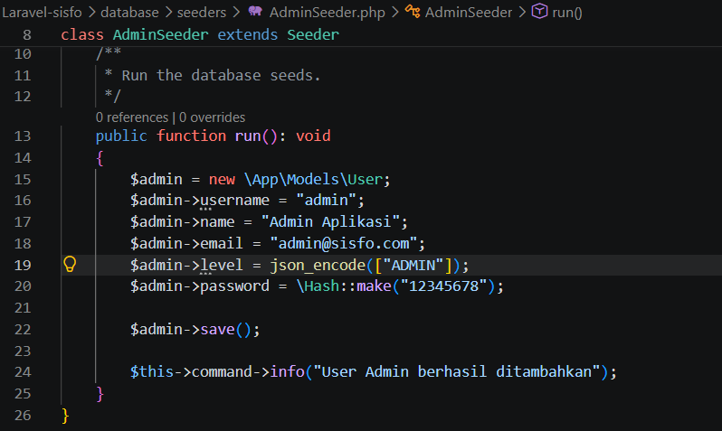
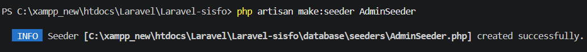
8. Login Menggunakan Akun Admin
Setelah data admin berhasil ditambahkan, proses login dilakukan untuk memastikan akun dapat digunakan dengan baik.
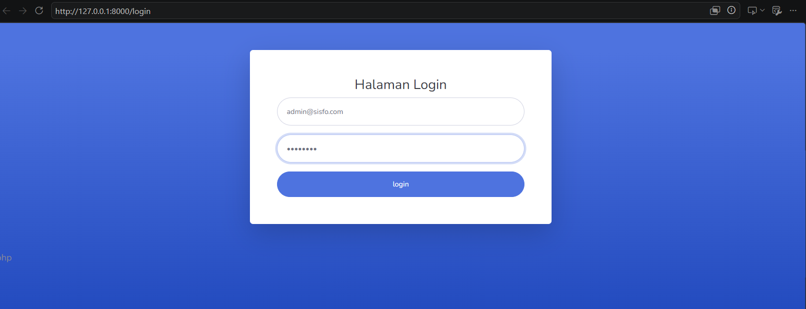
9. Mengintegrasikan Template SB Admin 2
Template SB Admin 2 digunakan untuk mempercantik tampilan aplikasi sehingga dashboard terlihat lebih profesional dan mudah digunakan.
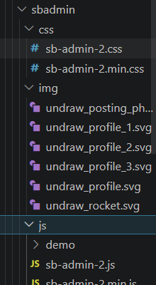
10. Membuat Layout Dashboard
Layout dashboard dibangun menggunakan komponen sidebar, topbar, dan content wrapper. Layout ini menjadi template utama yang digunakan pada halaman setelah login.

11. Membuat Sidebar dan Topbar
Sidebar digunakan sebagai menu navigasi sedangkan topbar digunakan untuk menampilkan informasi pengguna yang sedang login.
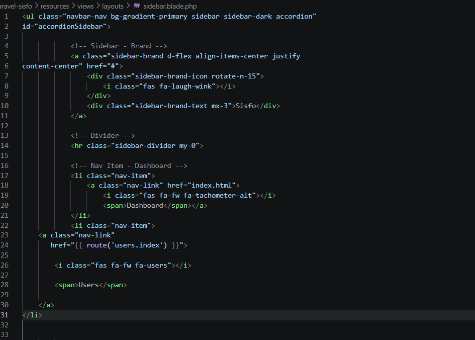
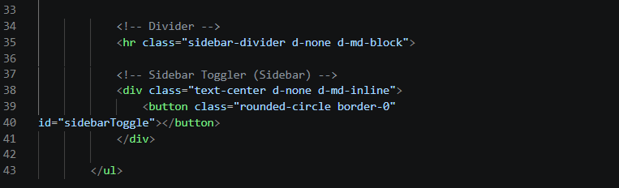
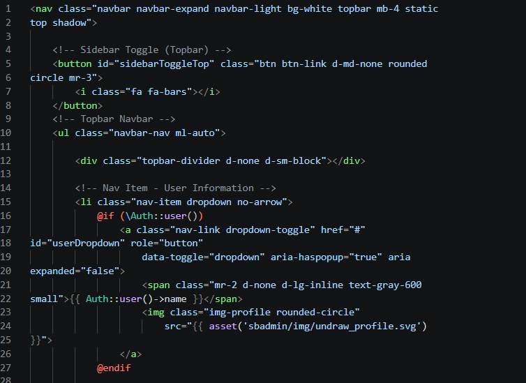
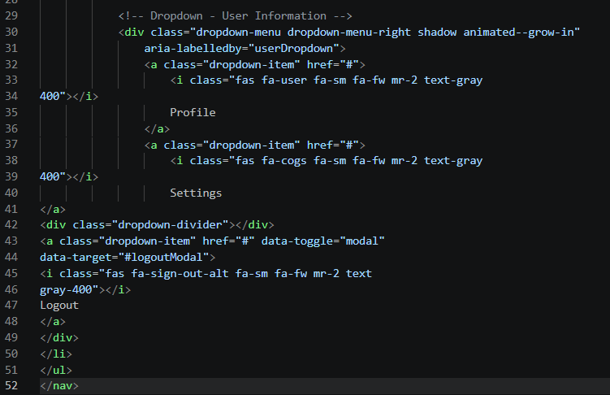
12. Membuat Halaman Dashboard
Halaman dashboard dihubungkan dengan layout utama sehingga seluruh komponen tampilan dapat ditampilkan secara konsisten.
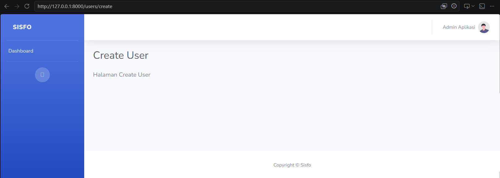
13. Membuat CRUD User
Selanjutnya dibuat fitur CRUD User yang memungkinkan administrator menambah, melihat, mengubah, dan menghapus data pengguna.
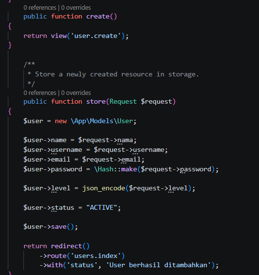
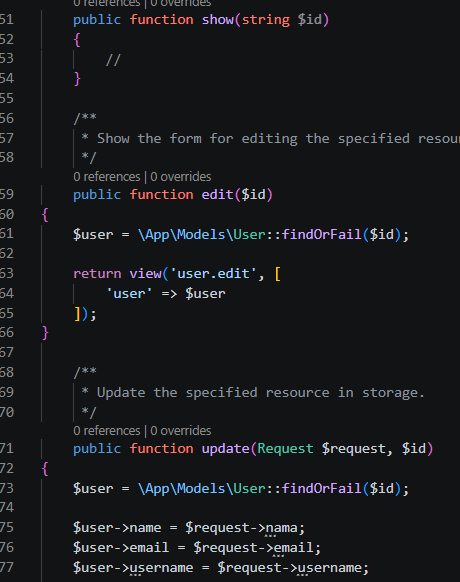
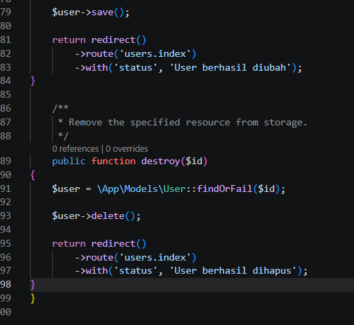
14. Menambahkan Data User
Form tambah user digunakan untuk memasukkan data pengguna baru ke dalam database.
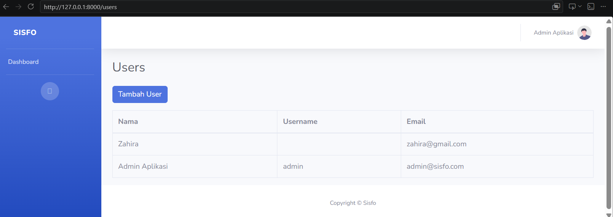
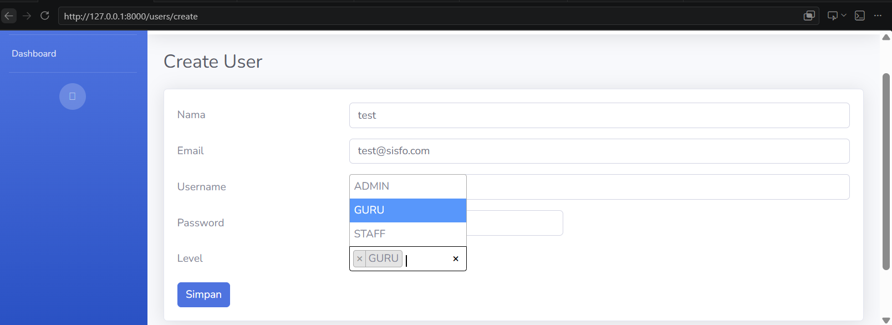
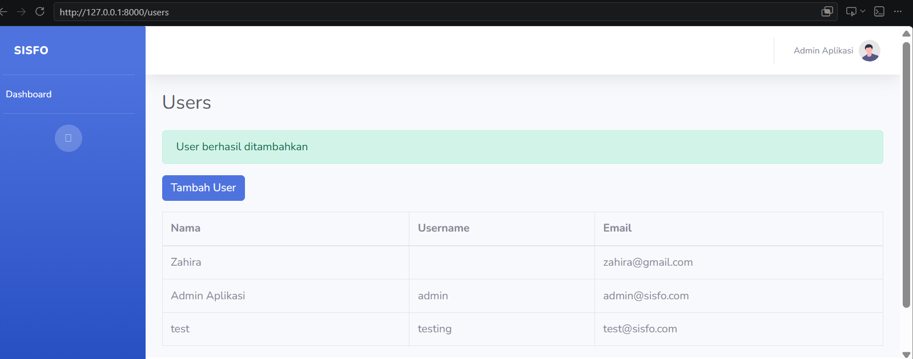
15. Mengubah Data User
Fitur edit memungkinkan administrator memperbarui data pengguna yang telah tersimpan sebelumnya.
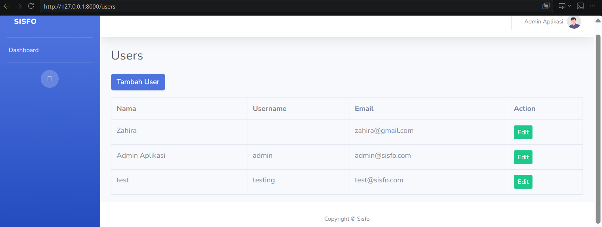
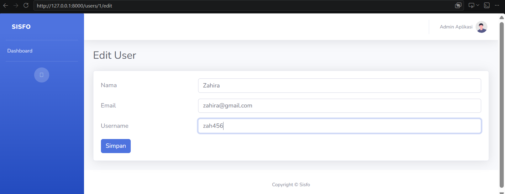
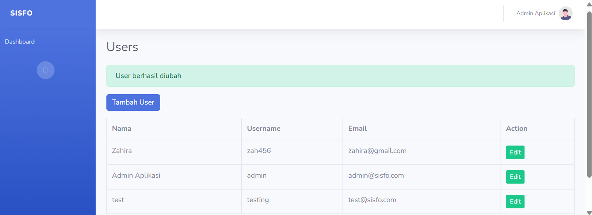
16. Menghapus Data User
Fitur delete digunakan untuk menghapus data pengguna yang tidak diperlukan lagi dari sistem.
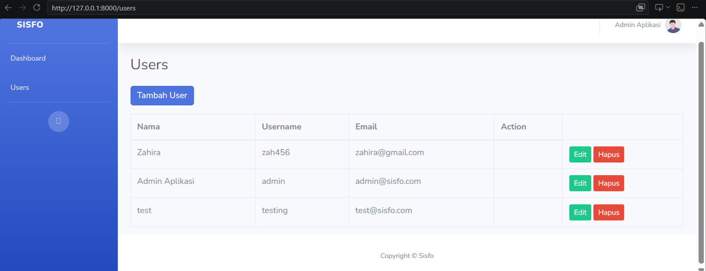
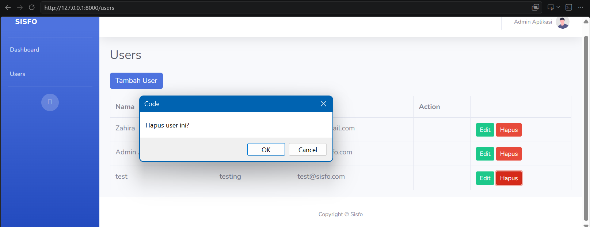
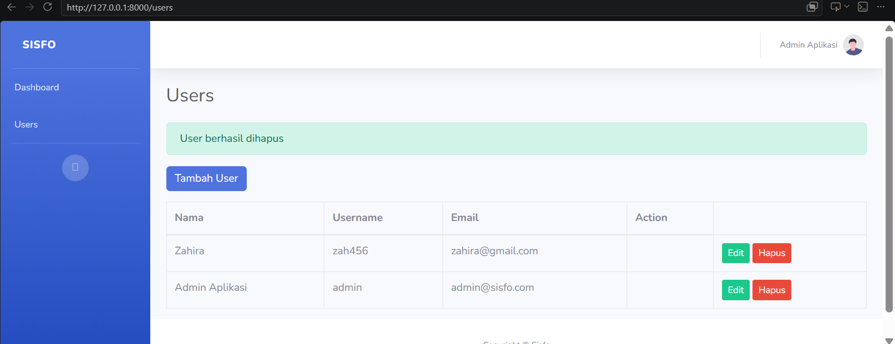
17. Tampilan Akhir Aplikasi
Setelah seluruh proses selesai, aplikasi berhasil menjalankan fitur autentikasi, dashboard SB Admin 2, dan CRUD User yang terhubung dengan database MySQL.
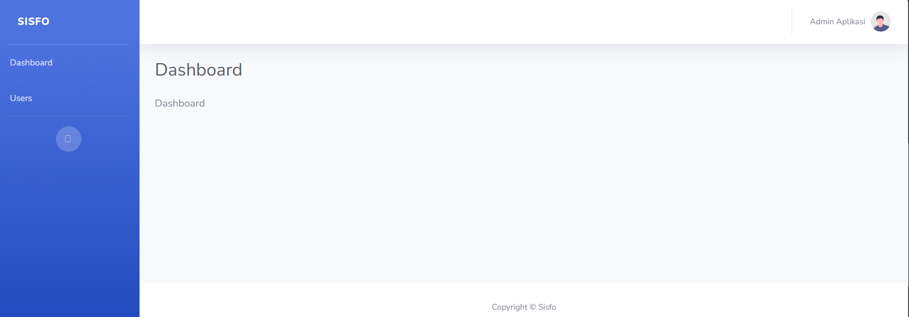
Hasil Pengujian dan Kendala
Pengujian dilakukan dengan mencoba proses login, menambah user, mengubah data user, dan menghapus user. Seluruh fitur berhasil dijalankan dengan baik dan data tersimpan ke database sesuai kebutuhan.
Kendala yang ditemukan selama praktikum adalah error saat proses seeding karena field level belum memiliki nilai. Masalah tersebut dapat diselesaikan dengan menambahkan field level pada data yang dimasukkan oleh seeder.
Kesimpulan
Praktikum ini berhasil membangun aplikasi Sistem Informasi sederhana menggunakan Laravel 12. Melalui praktikum ini dipelajari proses instalasi Laravel, konfigurasi database, pembuatan autentikasi, penggunaan template dashboard, serta implementasi CRUD User. Hasil akhir menunjukkan bahwa Laravel mampu membantu pengembangan aplikasi web secara terstruktur dan efisien.
Lihat Repository GitHub